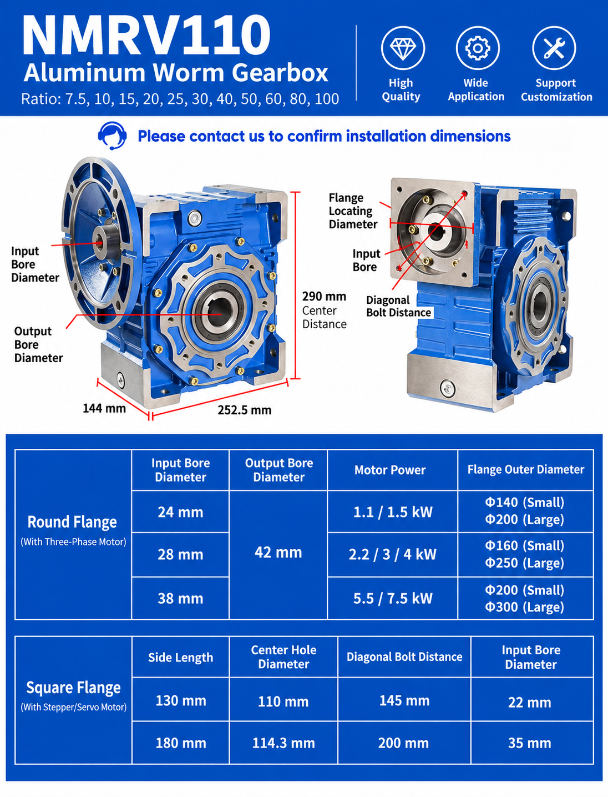

NMRV110 Worm Gearbox Overview
The NMRV110 worm gearbox is designed for industrial drives that need a compact 90-degree layout, substantial speed reduction and flexible motor connection. It can be configured with compatible three-phase AC motors, brake motors, servo motors or stepper motors when the adapter dimensions and duty are confirmed.
| Specification | NMRV110 |
|---|---|
| Model center distance | 110 mm |
| Common hollow output bore | Ø42 mm |
| Common ratios | 7.5, 10, 15, 20, 25, 30, 40, 50, 60, 80, 100 |
| Housing | Aluminum alloy |
| Motor-power examples shown | 1.1–7.5 kW |
| Motor connection | Compatible round IEC flange or confirmed custom square adapter |
NMRV110 Gear Ratios and Output Speed
Common ratios include 7.5, 10, 15, 20, 25, 30, 40, 50, 60, 80 and 100:1. Ratio selection begins with the motor rated speed and required machine speed.
Example assumption: 1400 rpm rated motor and a 50:1 gearbox ratio.
1400 ÷ 50 = approximately 28 rpm
Actual loaded speed can differ because of motor slip, supply frequency, load and operating conditions. Ratio alone does not confirm output torque or thermal suitability. Use the ratio and torque calculator for an initial estimate and then verify the result against approved NMRV110 data.
NMRV110 Installation Dimensions
The supplied diagram illustrates preliminary envelope references of approximately 290 mm overall height, 252.5 mm housing length and 144 mm housing width. NMRV110 denotes a 110 mm model center distance. Input-side dimensions change with the selected motor and flange.
Before ordering or replacing an existing reducer, compare:
- 42 mm hollow output bore, keyway and tolerance
- Input bore, pilot diameter and motor shaft
- Flange outside dimensions and bolt pattern
- Housing envelope and installation clearance
- Mounting position, oil level and breather arrangement
Round IEC Motor-Flange Examples
| Input bore | Illustrated motor-power examples | Illustrated flange outside diameters |
|---|---|---|
| 24 mm | 1.1 / 1.5 kW | Ø140 small / Ø200 large |
| 28 mm | 2.2 / 3 / 4 kW | Ø160 small / Ø250 large |
| 38 mm | 5.5 / 7.5 kW | Ø200 small / Ø300 large |
These are illustrated combinations rather than universal interchangeability claims. Confirm the motor frame, voltage, frequency, rated speed, flange pilot, shaft diameter, bolt pattern and required duty. See the SMK electric motor page and motor-to-gearbox matching guide.
Servo and Stepper Motor Adapters
The supplied drawing also shows square-adapter examples. A 130 mm side length is illustrated with a 110 mm center hole, 145 mm diagonal bolt distance and 22 mm input bore; a 180 mm side length is shown with a 114.3 mm center hole, 200 mm diagonal bolt distance and 35 mm input bore. Custom adapters must be checked against the actual motor drawing.
How to Select the NMRV110 Motor
Do not select motor power from gearbox size alone. Confirm:
- Required continuous and peak output torque
- Motor rated power, speed, voltage and frequency
- Ratio and expected output speed
- Operating hours, starts per hour and reversing duty
- Service factor and shock loading
- Ambient temperature and thermal capacity
- Mounting position and external radial or axial loads
The worm gearbox service-factor guide explains why duty can change the required reducer size.
Typical NMRV110 Applications
NMRV110 reducers are commonly considered for conveyors, packaging machinery, mixers, food-processing equipment, material handling and industrial automation. Conveyor projects should also confirm belt speed, drum diameter, conveyed load, incline and starts per hour; review the conveyor gearbox selection page.
Need NMRV110 Dimensions or Selection Help?
For a new drive or replacement, send:
- Motor power, rated speed, voltage and frequency
- Required output rpm or ratio
- Required continuous and peak torque
- Output bore, keyway and shaft dimensions
- Input flange and bolt-pattern drawing
- Mounting position and application details
- Existing nameplate and installation photos, if replacing a unit
Conclusion
NMRV110 selection begins with the required speed and 42 mm output connection, then continues with torque, service factor, motor, flange, thermal and mounting verification. Use the supplied graphic for preliminary comparison and request an approved drawing before finalizing the machine interface.